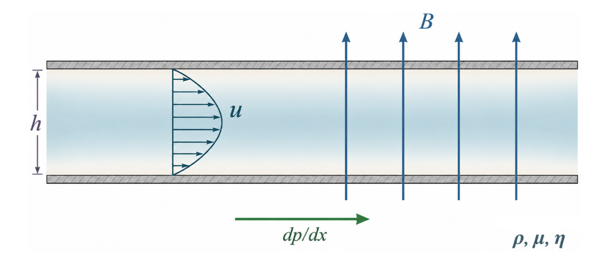
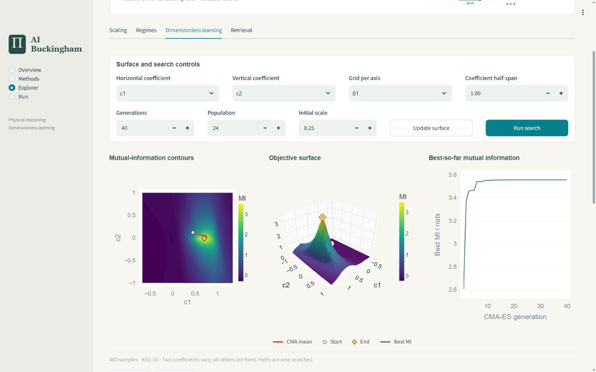
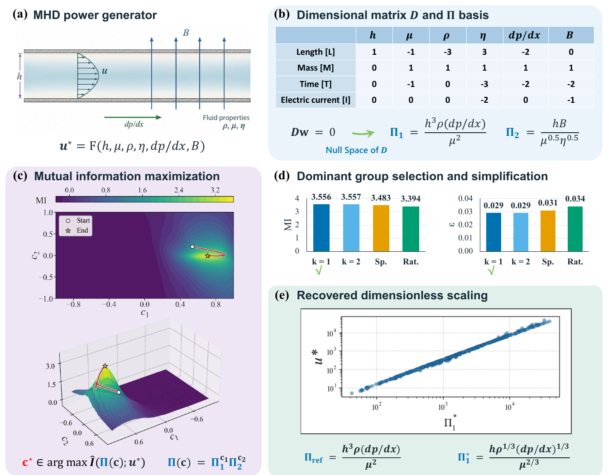
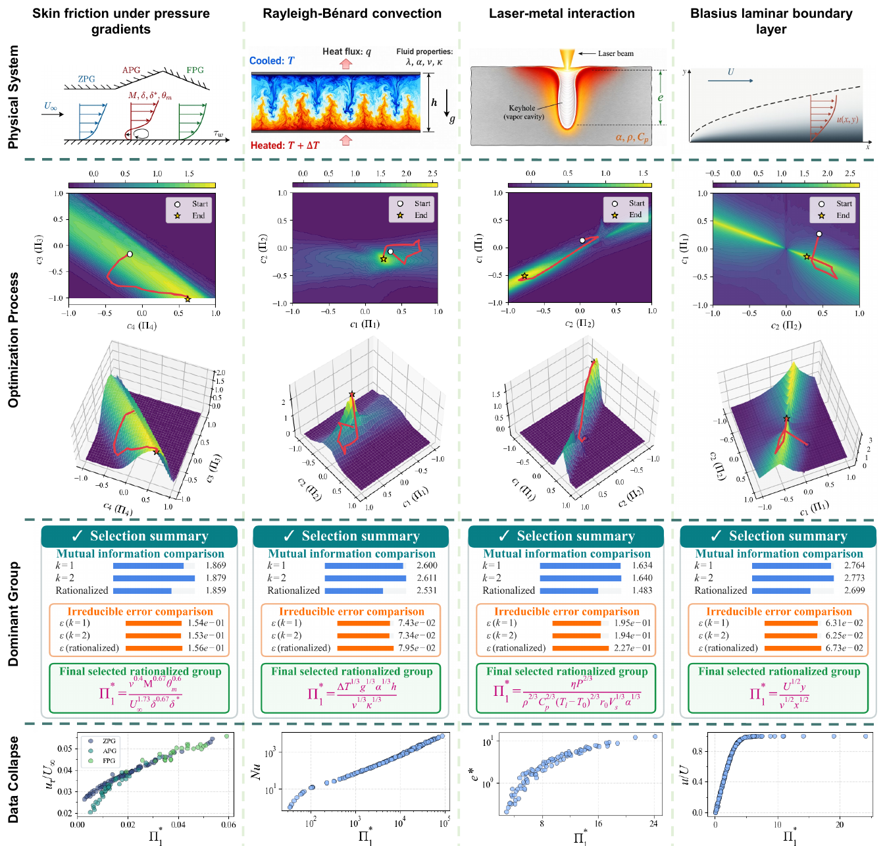
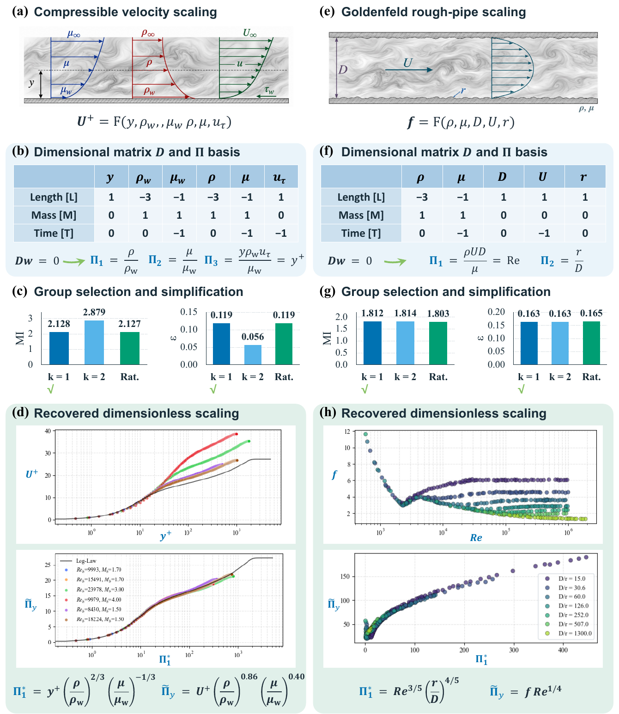
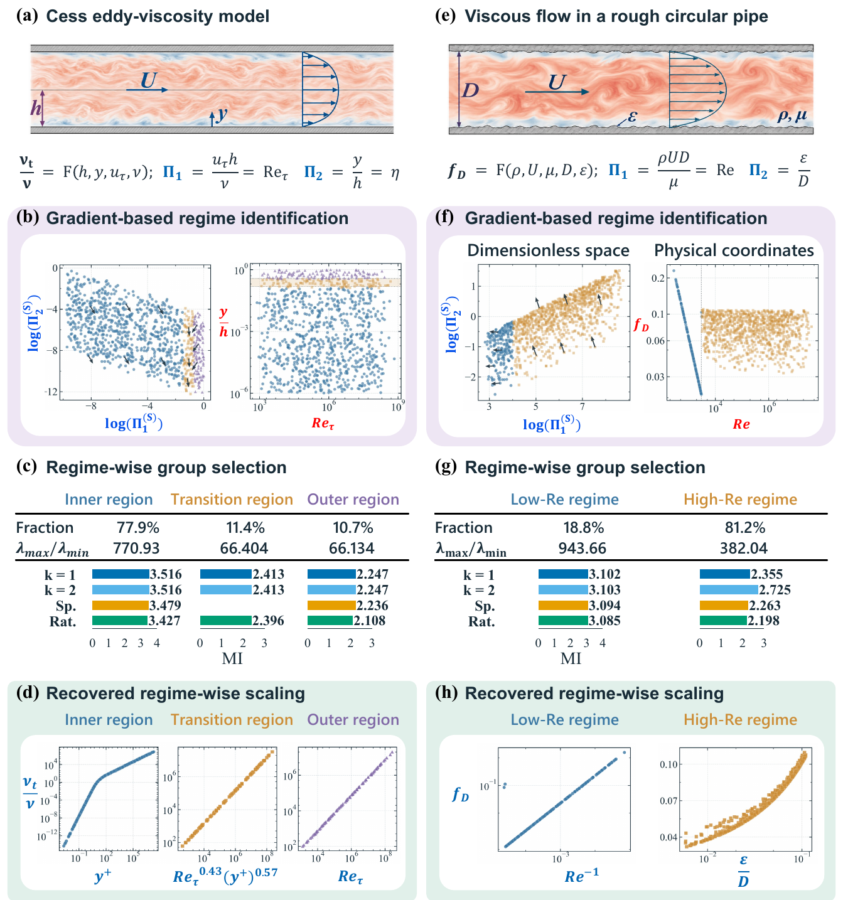

Understand the analysis
GPR gradients, eigenpair clustering, MI estimators and searchable physical knowledge.
Dimensionless discovery across physical regimes
Discover physical scaling laws through LLM-based orchestration, gradient-based physical-regime identification, and mutual-information-based dimensionless learning.

From physical reasoning to regime-wise scaling, in one workspace.

GPR gradients, eigenpair clustering, MI estimators and searchable physical knowledge.
Response collapse, regime geometry, optimization trajectories and validation across nine systems.
Upload a CSV, describe the physics and configure numerical settings, models and API endpoints.
Semantic planning, numerical inference, and grounded synthesis.

Selected original results. Open any image at full resolution.

From a dimensional basis to MI optimization and a compact scaling law.
View original image ↗
Pressure-gradient friction, convection, keyhole depth and the Blasius boundary layer.
View original image ↗
Compressible velocity and Goldenfeld rough-pipe scaling.
View original image ↗
Gradient geometry separates mechanisms in the Cess and rough-pipe systems.
View original image ↗Open a system to explore its data, learned representation and numerical evidence.
Compare responses in the Buckingham–Π basis and discovered representation.
Coordinate formulas and axis defaults follow the supplied results. Multiple-regime systems show separate physical subsets.
MI, uncertainty, simplification and conditional held-out R².
| Regime | Stage | MI ± σ | ε ± σ | Held-out R² |
|---|
Contours, surface and convergence share one view. Each physical regime has its own objective and search.
Use Streamlit for editable coefficient planes, new searches and full eigenpair inspection.
The repository includes modular numerical tools, the agent graph, nine case configurations, the Streamlit application, tests and selected original result figures.
python -m venv .venv # Activate the virtual environment, then: python -m pip install -e ".[app]" python -m streamlit run app.py
For fresh numerical inference with the selected configuration:
ai-buckingham numerical --case mhd \ --output results/local/mhd.json
Upload the public repository, then connect it to Streamlit Community Cloud with app.py as the entry point. The offline explorer needs no API credentials.
For autonomous runs, add your own provider settings through Streamlit Secrets or the app's Run workspace.
GitHub Pages hosts this research presentation. Streamlit hosts the interactive Python application.
| CMA-ES | Seed 42 · 3 optimization runs · population 300 · max 30,000 iterations · tolx/tolfun 10⁻⁸ |
|---|---|
| MI | KSG for N < 800; histogram for N ≥ 800 · default k=5 / bins=40; pipe local override bins=20 |
| Similarity | k=1 screening · relative MI loss 0.15 · negligible exponent 0.05 |
| Regimes | K ∈ {2,3,4} · minimum 60 samples / 5% fraction / eigenvalue ratio 50 · K=2 direction |cos θ| < 0.90 |
| Simplification | Exponent cutoff 0.05 · score increase ≤ 0.05 · default denominator 5 · rationalization relative MI loss ≤ 0.10 |
| Validation | 3 × 80/20 splits · max 800 samples · mean held-out R² ≥ 0.90 |